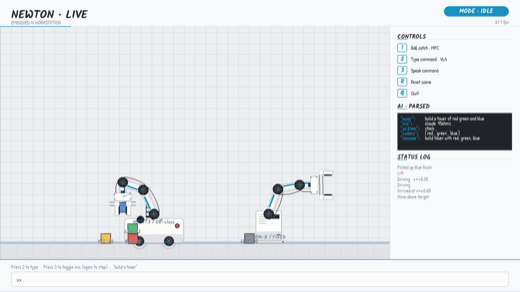
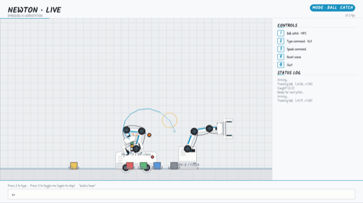
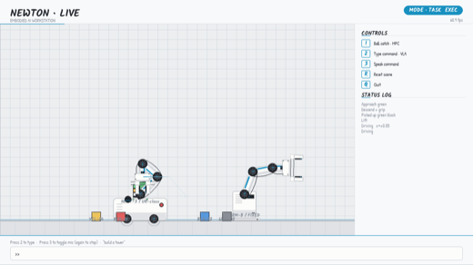
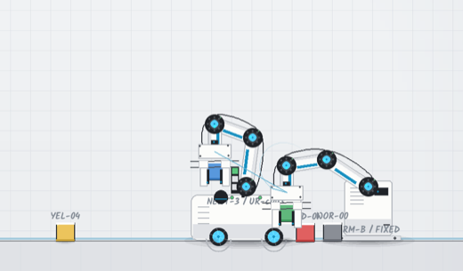
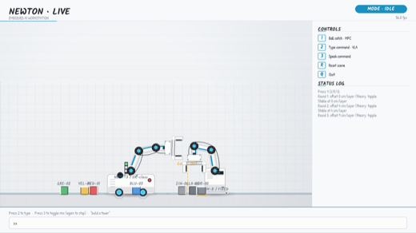
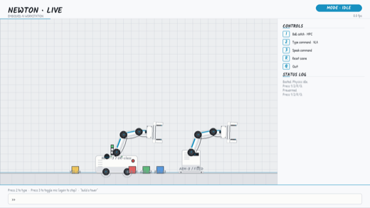
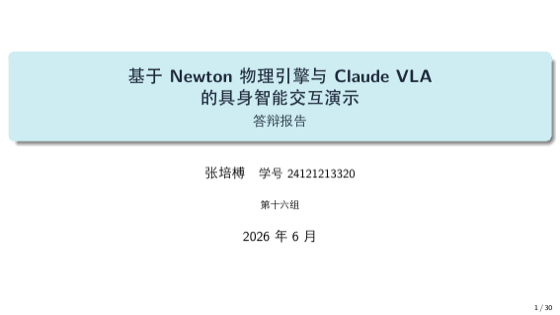
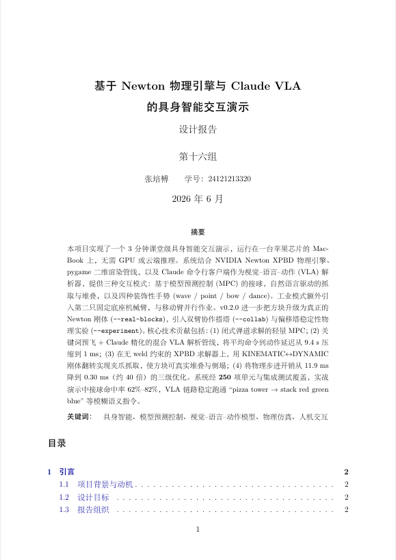
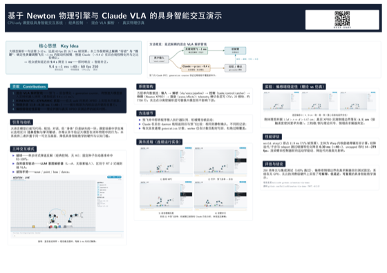

🔥 混合 VLA 解析管线 · Hybrid VLA Pipeline
在时间上解耦“行动”与“推理”：确定性关键词预飞在 ~1 ms 内驱动机械臂，慢速 Claude（~9.4 s）在后台线程精化并比较确认；generation counter 防止过期线程覆盖新命令。命令到动作的感知延迟由 9.4 s 降至 1 ms。

CPU-only 课堂级具身智能交互系统 — 经典控制 · 混合 VLA 解析 · 真实物理仿真。无 GPU，无云依赖。
v0.2.0 · 250 项测试 · ~7730 行 · 一台 MacBook，3 分钟跑完。

在时间上解耦“行动”与“推理”：确定性关键词预飞在 ~1 ms 内驱动机械臂，慢速 Claude（~9.4 s）在后台线程精化并比较确认；generation counter 防止过期线程覆盖新命令。命令到动作的感知延迟由 9.4 s 降至 1 ms。

经典控制、无 AI。每帧由当前 (x, z, vₓ, v_z) 单步闭式反解截击点并解算闭式 IK；蓝色轨迹采样 + 橙色截击圆环可视化决策。固定种子自动基准命中 92–100%（可复现）。

--real-blocks方块成为真正的 Newton 刚体（会堆叠、碰撞、倒塌）。XPBD 无 weld 约束，抓取以 KINEMATIC↔DYNAMIC 翻转实现：抓取时设 KINEMATIC、每帧写夹爪位姿，释放时设回 DYNAMIC 自由下落。

--collab舞台空闲时两臂接力搭塔：Arm A 取块至单一交接槽，Arm B 取走堆塔，角色互换拆塔后循环。单交接槽互锁 + 时序不对称（抬升 ~2 s vs 补给 ~10 s）保证两臂永不冲突；观众一动即让出双臂。

--experimentArm B 用三块工件按逐层偏移 0/4/9 cm 堆塔，由真实 XPBD 判定倒塌。刚体理想判据 1.5d>r ⇒ d>6.67 cm；真实仿真倒塌边界实测落在 (4, 5] cm（接触柔度使其更早失稳）。倒塌由求解器判定，非脚本写死，回归测试固定。

world.step() 原占 11.9 ms（71% 帧预算），其主体为 Warp 内核启动开销而非计算；经降迭代/子步与 teleport 跳过碰撞优化降至 0.30 ms（~40×），uncapped 吞吐 64→279 fps。全项目 250 项单元与集成测试，100% 通过。

完整答辩 deck：动机 → 技术栈 → 架构 → 三模式 → 混合管线 → v0.2.0 → 真实演示流程实录 → 性能 → 测试 → 总结。另有逐页中文讲稿版（每张幻灯片后跟一页台词）。


单页项目一览：核心思想 + 方法 pipeline 图 + 高亮贡献框 + 偏移塔实验结果 + 性能，配项目主页二维码。深海军蓝 + 深青配色。